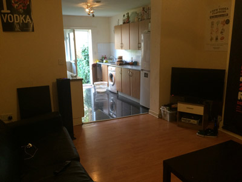

Accomodation
Accommodation Guide
Are you looking for your student accommodation before you start your first year? Thinking of moving out in your own accommodation? Yes? Well you are in the right place. As a student, at MMU you have many options in were you can live as a student whether that is: Home living, student homes, MMU Halls, student flats or private halls. You’ve come to the right place!
Accommodation Fees
As a student it can vary in how much you pay per year during your time with us. When you apply you must do this through the UCAS website. In which you are required to firm your choice of accommodation before any application that you send in can be accepted. We don’t expect you to pay for the accommodation fee’s upfront; we know not every student can do that. Most students pay with their ‘MMU Student Support Package’ if they are staying at MMU Halls or Maintenance Loan in three instalments. The typical prices range from £3,480 to £5,250 a year or £87 to £125 a week.
Student Opinions
One of our students in the department Kamaal Khanum-Williams 2nd year student who lives in Manchester, he lives at home. Asking him about his experience with living at home he said “I think living at home is really good, something I used to take for granted. It is much easier to commute to university and the fee is much less! I guess not everyone is able to live at home if they don’t live in Manchester but I would say if you are living in Manchester close by like me I would just stay at home during studies its way cheaper!!”
Umair Yaquoob is currently a second year student who living in private halls during his studying, while at MMU. “Living away from family is quiet difficult as your so use to having them around. When living away from home you have to be more careful with your money. However, you become more independent as you do not rely on anybody. On average if you looking to live in private halls it will cost you between £5000-£7000, depending what type of room you need. The rooms are amazing as they have up to date facilities.”